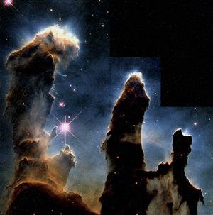
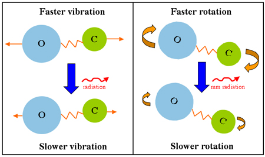

Dust and gas primarily in the form of hydrogen molecules are the main constituents of the coldest, densest clouds in the interstellar medium. These molecular clouds (the largest of which are known as Giant Molecular Clouds) have typical temperatures of around 10 Kelvin and densities upward of 102 particles/cm3, masses ranging from a few to over a million solar masses and diameters from 20 to 200 parsecs. Star formation takes place exclusively within molecular clouds and observations have shown that they are located primarily in the disk of spiral galaxies and the active regions of irregular galaxies.
Since molecular clouds are cold and dark, we cannot observe them directly in visible light. Closer ones may be silhouetted against bright nebulae or background stars, but the majority will be undetectable, since the distant bright background objects against which they are visible are dimmed through interstellar extinction.
Molecular clouds do, however, emit longer, millimeter wavelength radiation that can pass through the interstellar medium unaffected. Just as the electrons in an atom can only exist in specific energy levels and need to absorb or release energy as they transition from one energy level to another, molecules can only rotate and vibrate at certain rates. Specifically, energy must be absorbed or emitted when a molecule changes its rotational state, with the small energy difference corresponding to millimeter wavelengths.

One complication is that while molecular hydrogen is by far the dominant molecule in molecular clouds, it is very difficult to detect. One reason is that the strength of spectral lines from molecules is related to how asymmetric the molecule is. Since the hydrogen molecule is perfectly symmetric (containing two hydrogen atoms), its spectral lines are extremely weak.
In addition, the energy required to change the rotational state of a molecule is dependent on its mass. Since the hydrogen molecule is the lightest of all molecules, a significant amount of energy (500 Kelvin approx.) must be absorbed to change its rotational state. In a cloud with an average temperature of 10 Kelvin approx., this is an unlikely event and most of the hydrogen molecules will remain in their ground state.
Fortunately it is not necessary to actually detect the molecular hydrogen in order to find molecular clouds. Over 125 other molecular species have now been identified in the interstellar medium and the carbon monoxide molecule (CO) in particular is invaluable in locating these objects. It has been shown that for every CO molecule there are about 10,000 hydrogen molecules meaning that we can trace molecular hydrogen through the emission from the CO molecule. This is the primary method use to locate molecular clouds.